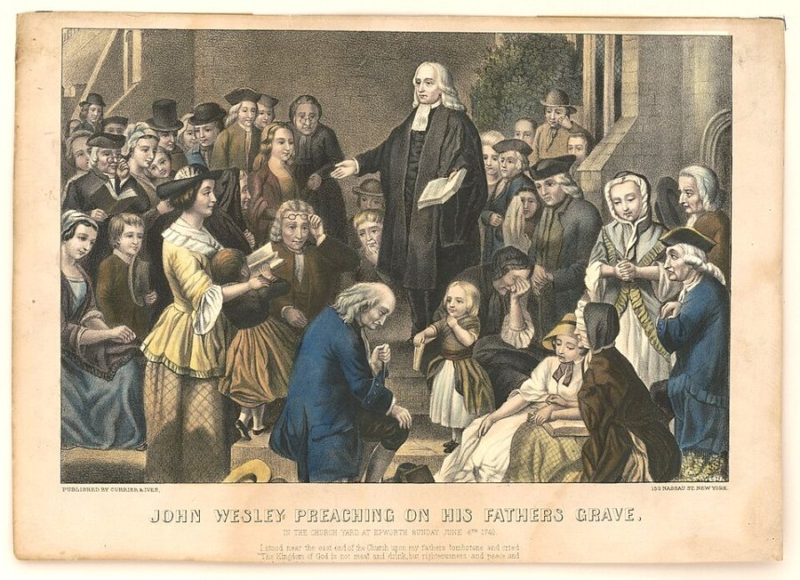

这一页在做什么
上一页拿「谁付钱」这把尺子量大学和小学，这一页斯密拿它去量牧师。18 世纪的英国有国教，牧师靠什一税和俸禄过日子；街头却是卫理公会的天下。国家该不该养着牧师？他的好友休谟说该养，好让他们懒下去；斯密不同意。读的时候抓两条线：教派多了是乱还是稳；商业怎样像拆掉领主那样，拆掉了中世纪教会的权力。最后几段是卷五第 1 章的总账。

他想证明什么
第 192 段开头就把页 25 的道理搬过来：牧师也是教师，靠信众自愿捐献过活的，比靠地产、什一税、固定薪俸的卖力得多，这是利益和职责的又一个例子。接着他大段引用休谟（第 194–197 段，引号里全是休谟的话）：正因为牧师一卖力就会煽动狂热，聪明的立法者该给他们发固定薪俸，买下他们的懒惰。斯密从第 198 段起反驳：国教从来不是这样想出来的，是政治派系拉拢教派、打赢了分赃的结果；要是政治不插手宗教，教派会分成成百上千个，谁也大不到能扰乱治安。往后是一部教会权力史，要证明的是同一件事：牧师的权力和热心，跟着他们的钱从哪来、怎么分而变。
读法：§2 是这一页唯一的先读，两千词；有空再读 §1 的休谟和 §4 的教会衰落，§6 斯密夸苏格兰清贫的牧师，也是在夸他自己的大学。§3、§5 是教会史，可以跳过。§7 很短，是全章的结论。
斯密落在哪：国家最好不立国教、平等对待一切教派，只管不让它们互相迫害；教派一多一小，狂热就闹不出大事，日久也许还会彼此宽容。教育和宗教的钱，也许最好由受益的人自己出，不够的再由公家补。
分节地图
这一页是卷五第 1 章第三部分的第三项、第四部分和全章结论，本站切成 7 节。粗体是本站起的节名；「杨译里找」后面是杨译里这一节开头附近的小标题或第一句；灰色的英文是原文这一节开头的几个词。标「先读」的是最短读法。
- 吃俸禄的牧师和休谟的妙计第三项 论教育所有年龄人民的机构的支出THE institutions for the instruction of …第 192 段是 18 世纪英国宗教的速写；第 193 段托钵僧「没有掠夺就没有饷」。第 194–197 段整段是休谟的话，不是斯密的主张。
- 一千个教派胜过一个国教如果政治斗争没有寻求宗教的帮助，教派就会数目众多，因而不得不学会彼此容忍But if politics had never called …全页的核心，限定词很多，留意 probably。第 203 段进城的穷人为什么加入小教派，是一段漂亮的社会学；第 205–206 段开了两味药。
- 君主怎样驾驭牧师在不偏爱一种宗教的国家，君主没有必要去影响宗教教师In a country where the law …有国教的君主只能拿升迁笼络牧师，硬来没用；教皇怎样把各国教士编成一支「精神军队」。中世纪教会史，结论下一节会用到，可以跳过。
- 商业拆掉了教会的权力罗马教会在中世纪是反对自由、理性和幸福的最可怕的联合In the state in which things …第 215 段骂得最狠，要读到那句限定；第 216 段和页 15 的钻石扣环是同一个故事，主角换成了主教和修道院。
- 宗教改革和选牧师的风波宗教改革的教理，由于他们的教师的热心而受到普通人民的欢迎The authority of the church of Rome …各国君主怎样借宗教改革和罗马翻脸，路德派和加尔文派怎样定牧师人选。史实多，可以跳过；第 227 段讲苏格兰教区选牧师闹出的乱子。
- 清贫的长老会牧师长老派牧师的平等使得他们独立和受人尊敬The equality which the presbyterian form …俸禄薄而平均，牧师只好靠品行赢得尊敬，大学也请得到最好的学者。第 231 段斯密谈教书使人学问扎实，听得出是自述。
- 谁受益谁付钱第四部分 论维持君主尊严的支出OVER and above the expence …君主的排场为什么越来越贵，然后用六段话把卷五第 1 章的开支逐项分给该付钱的人，本站做成了一张表。下一章讲一般收入从哪来。
先用中文过一遍：这一页的概念
这一页用到的概念。讲的是概念本身；每块的「今天」说今天怎么看它。页 25 的利益和职责、页 15 的家臣和依附在这一页还会用到。
§2教派竞争 the interested and active zeal of religious teachers
把教会当成一种「卖」安慰、意义和归属的组织来看：牧师要靠信众养活，就得用心布道、关照会众，不然人就去了别的教派；靠法律保障俸禄的，用不着这样。斯密由此推了两步。第一步，有国教撑腰的牧师会懈怠，百姓的信仰热情跟着冷下来，新教派一来就招架不住。第二步，国家不偏袒任何一派，教派会分得很碎，每一派都小到闹不出乱子，彼此只好客气。要留意，他谈的是教会的组织和钱，不评哪一种教义对；「市场」「竞争」是今天的说法，他没用这些词。
今天：宗教社会学有一派叫「宗教市场模型」，代表是 Stark、Finke 和经济学家 Iannaccone，明确把斯密这一章当源头。它对不对至今在争，见「今天怎么看」。
在这一页：第 192–193 段讲牧师的干劲看钱从哪来，第 199–200 段推到教派越多越安全，第 229 段反过来夸俸禄薄的长老会牧师。
故事和背景
这一页里的故事和 18 世纪的东西，按在书里出现的顺序排。
§1国教、什一税和到处讲道的卫理公会
斯密写书时，英格兰有国教，就是英格兰教会：法律保障它，教区牧师靠什一税（交给教会的十分之一收成）和教会的地产过活，一份有俸禄的教职叫 benefice，译本：「圣俸」。不肯归顺国教的新教徒，长老派、浸礼派、公理会等，统称 dissenters，即「不从国教者」，1689 年起可以公开做礼拜，却仍被法律挡在公职之外（这几条法律到 1828 年才废除），牛津、剑桥也不对他们敞开。第 192 段斯密说，国教牧师有学问、有绅士风度，却丢了对平民的影响；不从国教者有了固定捐助，也变得有学问而不再受欢迎；卫理公会「学问不及他们一半」，却最时兴。卫理公会是 John Wesley 兄弟从英格兰教会内部发起的运动，常在野外和矿区讲道。斯密拿了个比喻：遇上大胆的狂热派，国教牧师就像南亚饱食的民族遇上北方饥饿的鞑靼人，只好请官府去迫害对手。
§1休谟的妙计：花钱买牧师的懒惰
第 194–197 段是一大段引文，出自休谟的《英格兰史》第 29 章（Cannan 注）。斯密称他是「当代最杰出的哲学家和历史学家」，两人是至交，休谟 1776 年去世，就在《国富论》出版后几个月。休谟的推理很巧：大多数行业可以交给顾客，手艺人想多赚钱自会用心；牧师却不行，他们一卖力，就会煽动信众仇恨别的教派、拿新奇的教义去讨好人的激情。所以最划算的办法，是给牧师发固定薪水，「收买他们的懒惰」，让他们除了看住羊群别乱跑，什么也不必干。休谟说除「真正的宗教」以外，这种热心都很有害，这是当时写作的惯用保护语，不必读成信仰表态。斯密接下来的几页，就是对好友的反驳。
§2进城的穷人为什么加入小教派
第 203 段是全页最好看的一段社会学。有地位的人是大社会里的显要人物，人人盯着他，他不敢出格。穷人在村子里也有人盯着，「只有在这种处境下」才有名声可丢；一进大城市，他就「沉入了默默无闻」，没人看他，他自己也就不管自己，容易堕落。最能让他重新被人看见的，是加入一个小教派：教友为了教派的名声盯着他的品行，犯了大错就开除，这是很重的惩罚。所以小教派里普通人的品行一般比国教里规矩得多，斯密接着补一句：也常常严格得叫人不舒服、不合群。他开的药不是压制，而是两样：让中上层人人学科学和哲学，让戏剧、音乐、舞蹈自由地热闹起来。
§7卷五第 1 章的总账：谁受益，谁付钱
页 23 到页 26 讲了君主该花钱的几件事，第 237–242 段一项项分给该付钱的人。原则是：好处归全社会的，全社会按能力出；好处归一部分人的，最好由那部分人出。这正是页 24 的使用者付费，「按能力」那一半在下一页的赋税四原则里展开。
| 开支 | 斯密说谁来付 | 段 |
|---|---|---|
| 国防 | 全社会，按各人能力出 | 237 |
| 君主的排场和尊严 | 全社会，按各人能力出 | 237 |
| 司法 | 可以全社会出，但很合适由打官司的人交诉讼费；没钱的罪犯才由公家出 | 238 |
| 只惠及一地的开支（如一城的治安、照明） | 本地的收入，不该摊给全国 | 239 |
| 道路和交通 | 可以全社会出，但收费公路让走路运货的人付，更省国库 | 240 |
| 教育和宗教教导 | 可以全社会出，但「也许」由受教育的人和自愿捐献的人出同样合适，还有点好处 | 241 |
| 以上各项收不够的 | 多数情况下由一般收入补，一般收入从哪来见下一章 | 242 |
原典：斯密的原话
这本书是公版书，下面整段放斯密的原文，配本站的白话译。灰字说它在杨译的哪里，最后一行是这段里今天容易读错的 18 世纪词。
§2两三百个，或许几千个小教派
这一页唯一的先读，斯密反驳休谟的核心一段，略去几句。在杨译如果政治斗争没有寻求宗教的帮助，教派就会数目众多，因而不得不学会彼此容忍这个小标题下面那一段。
But if politics had never called in the aid of religion, … it would probably have dealt equally and impartially with all the different sects, and have allowed every man to chuse his own priest and his own religion as he thought proper. … The interested and active zeal of religious teachers can be dangerous and troublesome only where there is, either but one sect tolerated in the society, or where the whole of a large society is divided into two or three great sects; … But that zeal must be altogether innocent where the society is divided into two or three hundred, or perhaps into as many thousand small sects, of which no one could be considerable enough to disturb the public tranquillity. … The teachers of each little sect, finding themselves almost alone, would be obliged to respect those of almost every other sect, and the concessions which they would mutually find it both convenient and agreeable to make to one another, might in time probably reduce the doctrine of the greater part of them to that pure and rational religion, … such as wise men have in all ages of the world wished to see established; but such as positive law has perhaps never yet established, and probably never will establish in any country
本站译：可是，假如政治从来没有拉宗教来帮忙，……得胜的一方大概就会平等、公正地对待所有教派，让每个人照自己的意思挑选自己的牧师和自己的宗教。……宗教教师那种出于私利的、积极的热心，只有在两种情况下才危险、才惹麻烦：社会只容许一个教派存在；或者整个大社会分成两三个大教派。……如果社会分成两三百个，或许几千个小教派，没有一个大到足以扰乱公共安宁，那种热心就一定完全无害。……每个小教派的教师发现自己几乎孤立无援，就不得不尊重几乎所有别的教派的教师；他们彼此都觉得又方便、又惬意的那些让步，日久或许会把大多数教派的教义，变成那种纯粹而合乎理性的宗教。……历代的智者都希望看到这样的宗教确立起来，可是成文法也许从没确立过它，大概也永远不会在任何国家确立它。
数一数限定词：probably 出现了好几次，还有 perhaps、might in time。斯密说的是一种可能的趋势，不是保证。下一段他还留了退路：就算教派们没变得温和，只要够多够小，狂热也闹不出大事。
- zeal宗教上的热心，常带「过头」的意思
- interested出于私利的，不是「感兴趣的」
- chusechoose 的旧拼法
- positive law成文法、国家制定的法律，和「自然法」相对，不是「积极的法律」
§2科学和戏剧，两味解毒药
常被引用的一句名言，加上第二味药。在杨译有两种可能的救济办法后面那两段，第一段的末句和第二段。
Science is the great antidote to the poison of enthusiasm and superstition; and where all the superior ranks of people were secured from it, the inferior ranks could not be much exposed to it. The second of those remedies is the frequency and gaiety of public diversions. The state, by encouraging, that is by giving entire liberty to all those who for their own interest would attempt, without scandal or indecency, to amuse and divert the people by painting, poetry, music, dancing; by all sorts of dramatic representations and exhibitions, would easily dissipate, in the greater part of them, that melancholy and gloomy humour which is almost always the nurse of popular superstition and enthusiasm. Public diversions have always been the objects of dread and hatred, to all the fanatical promoters of those popular frenzies. … Dramatic representations besides, frequently exposing their artifices to public ridicule, and sometimes even to public execration, were upon that account, more than all other diversions, the objects of their peculiar abhorrence.
本站译：科学是治狂热和迷信这两种毒的大解药；上层的人都免了这种毒，下层的人也就不大会中毒。第二个办法，是让公共娱乐多起来、热闹起来。凡是为了自己的利益，想用绘画、诗歌、音乐、舞蹈，用各种戏剧演出和展览，去逗乐人民、让人民散心的人，只要不伤风败俗，国家都鼓励，也就是说，给他们完全的自由。这样，大多数人身上那种忧郁、阴沉的心绪就很容易散掉，而这种心绪几乎总是民间迷信和狂热的温床。煽动这类群众狂热的人，没有一个不怕、不恨公共娱乐。……戏剧还常常把他们的花招拿到大庭广众面前让人嘲笑，有时甚至让人唾骂，所以在所有娱乐里，他们格外厌恶戏剧。
「鼓励」斯密自己解释成「给予完全的自由」，不是拿钱补贴，和他在前一段说的「不给教师发薪水」一个思路。science 在 18 世纪指一切成体系的学问，包括哲学和数学。学问是不是解药，今天的证据见「今天怎么看」的最后一条。
- enthusiasm宗教狂热，18 世纪的贬义词，不是「热情」
- diversions娱乐、消遣
- humour心绪、脾气，不是「幽默」
- execration咒骂、痛恨
§4理性推不倒的，商业推倒了
全页骂得最狠的一句，后面紧跟着一句限定，再接上第 216 段开头。在杨译罗马教会在中世纪是反对自由、理性和幸福的最可怕的联合这个小标题下面那两段。
… the constitution of the church of Rome may be considered as the most formidable combination that ever was formed against the authority and security of civil government, as well as against the liberty, reason, and happiness of mankind, which can flourish only where civil government is able to protect them. … Had this constitution been attacked by no other enemies but the feeble efforts of human reason, it must have endured for ever. But that immense and well-built fabric, which all the wisdom and virtue of man could never have shaken, much less have overturned, was by the natural course of things, first weakened, and afterwards in part destroyed, and is now likely, in the course of a few centuries more, perhaps, to crumble into ruins altogether. The gradual improvements of arts, manufactures, and commerce, the same causes which destroyed the power of the great barons, destroyed in the same manner, through the greater part of Europe, the whole temporal power of the clergy. In the produce of arts, manufactures, and commerce, the clergy, like the great barons, found something for which they could exchange their rude produce, and thereby discovered the means of spending their whole revenues upon their own persons, without giving any considerable share of them to other people.
本站译：……罗马教会的体制可以看作有史以来最可怕的一个联合，它既和政府的权威与安全作对，也和人类的自由、理性和幸福作对，而这三样东西，只有在政府保护得了它们的地方才能繁荣。……这套体制要是除了人类理性那点微弱的努力，再没有别的敌人，它一定会永远存在下去。可是这座庞大而坚固的建筑，人类的全部智慧和德行都撼动不了，更别说推倒，却在事物的自然进程中先被削弱，后来部分被摧毁，看来或许再过几个世纪，就会整个坍成废墟。技艺、制造业和商业的逐步改进，也就是摧毁大领主权力的那些原因，在欧洲大部分地方，以同样的方式摧毁了教士的全部世俗权力。教士和大领主一样，在技艺、制造业和商业的产品里，找到了可以拿自己的粗产品去换的东西，于是发现了一个办法：把全部收入花在自己身上，不必分给别人多少。
那句限定很要紧：斯密骂的是教会和政府争权，让自由和理性失去保护，不是骂信徒。他说的「坍成废墟」指那套和世俗权力绑在一起的体制；至于信仰本身，梵蒂冈统计 2023 年全世界天主教徒约 14 亿。后半段的机制见页 15 的无意中完成的革命。
- constitution体制、组织结构，不是「宪法」
- arts技艺、手艺，不只是艺术
- temporal power世俗权力，和精神权威相对
- rude produce未加工的产物：谷物、牲口、羊毛
译本勘误
杨译这几节整体可靠。下面只收会把人读歪的三处。灰字是英文原文那一处的几个词；方框里是杨译的原句，在电子书里搜它。
§1dissenters 是不从国教的新教徒术语
chiefly cultivated by the dissenters and
译本：「只有反对派和美以美教派加以培育」
dissenters 指英格兰不肯归顺国教的新教徒（长老派、浸礼派等），是宗教上的「不从国教者」。同一段前文杨译作「非国教派」，这里和后文又作「反对派」，容易读成政治反对派。「美以美教派」是卫理公会的旧译名。
§7原文只说「君主」，没有「专制」误译
a monarch is more raised above
译本：「专制君主高出他的臣民」
原文是 monarch，泛指国王，英国国王也在内。斯密比的是君主国和共和国：国王比威尼斯总督、荷兰市长更高出臣民，所以排场更贵。加了「专制」，读起来像在说专制国家。
§7police 是城镇的公共管理术语
upon the police of a particular town
译本：「对某个城市地区的警察所作的支出」
18 世纪的 police 指一城一地的公共管理：治安、清洁、照明、市场秩序都算。斯密举它当「好处只在本地」的例子；译成「警察」，范围就缩成了治安队伍。
今天怎么看
这一页的主要说法和今天的判断。每条标签判的是那条论点，五种标签的意思：
- 成立今天的经济学和证据支持这句话。
- 部分成立大方向对，细节或适用范围要改。
- 过时说的是 18 世纪的世界，当时也许对，今天的制度和技术已经变了。
- 被推翻后来的经济学或证据说明它错了。
- 有争议经济学界至今没有定论，两边各有代表性的研究。
靠俸禄的国教牧师会懈怠，百姓的信仰热情随之冷下来；靠信众供养的教派更有劲
牧师的勤惰看钱从哪来，和页 25 的教授一个道理（第 192–193 段）。今天看，宗教社会学里有一派拿数据支持它，另一派说这些数据靠不住，见下面的对照卡。
§1 第 192–193 段国家不偏袒任何教派，教派分得够多够小，狂热就闹不出大事，日久或许会彼此宽容
今天看，前一半大体经得住：美国 1791 年宪法第一修正案不许国会立国教，教派林立，没有再出现欧洲那种由国家出面迫害异端的局面；麦迪逊在《联邦党人文集》第 51 篇也写过，宗教自由的保障在于「教派众多」，和斯密是同一思路。后一半没有应验：教派并没有趋向「纯粹而合理的宗教」，经济学家 Iannaccone 1994 年还论证，规矩越严的教会反而越兴旺。斯密自己也只说「或许」。
§2 第 199–200 段中世纪教会的世俗权力先被商业掏空，宗教改革是在它已经衰落时推了一把
前一半和页 15 的领主是同一个机制，今天看也是原因之一，不是全部：斯密自己在 §3、§4 讲了各国君主怎样立法、订约，从教皇手里夺回任命主教的权（第 217 段），页 15 讲过的黑死病、战争财政也要算进去。后一半今天有新证据补充：经济学家 Rubin 2014 年发现，1500 年前就有印刷所的城市，到 1600 年成为新教城市的可能至少高出 29 个百分点，新教义传得快，印刷术功劳不小。
§4 §5 第 216–221 段教育和宗教的开支，也许由受益的人和自愿捐献的人出同样合适
斯密用了 perhaps，也承认全社会出钱「并无不公」（第 241 段）。今天看，宗教这一半在政教分离的国家大体如此；教育这一半没被采纳：多数国家的基础教育由一般税收免费提供，理由正是页 25 讲的教育的外部好处，斯密自己的教区小学也要公家出一部分。
§7 第 238–242 段书里的说法：靠俸禄的国教牧师会懈怠，百姓的信仰热情随之冷下来；靠信众供养的教派更有劲
- 书里
- 第 192 段：靠信众自愿捐献的教师，热心和勤勉「很可能」大得多；国教牧师久了就荒废了让百姓保持虔诚的本事。第 193 段拿罗马教会里靠捐献过活的托钵僧作对照。
- 当时
- 英格兰国教稳坐俸禄，卫理公会在田野和矿区吸引大批信众；北美殖民地多数地方没有统一的国教。
- 今天
- 支持的一边是「宗教市场模型」：Iannaccone 1991 年比较 17 个西方发达国家，发现在新教国家里，竞争激烈的地方上教堂和信教的比例明显高于国教独大的地方；Finke 和 Stark 1992 年的《美国的教会化》估计，美国人里教会成员在 1776 年不到五分之一，政教分离、教派竞争之后升到约六成。美国至今比有国教传统的北欧更「信教」，常被当作例子。
- 另一边
- 社会学家 Chaves 和 Gorski 2001 年综述了几十项研究，结论是证据不支持「宗教多元提高宗教参与」这个一般说法；Voas、Olson 和 Crockett 2002 年进一步指出，以往无论正负的相关，多半是计算方法造出来的。社会学家 Steve Bruce 等世俗化论者认为，现代化本身就让宗教退潮，美国也不例外：Pew 2023–24 年的调查里，29% 的美国成年人不属于任何宗教。核对于 2026-10。依据：Iannaccone, Rationality and Society, 1991；Finke & Stark, The Churching of America, 1992；Chaves & Gorski, Annual Review of Sociology, 2001；Voas, Olson & Crockett, American Sociological Review, 2002；Pew Research Center, Religious Landscape Study, 2025。
学问能治狂热吗
主流看法：启蒙以来的乐观看法是：知识越多，迷信和狂热越少。今天的研究让这件事复杂了：Gambetta 和 Hertog 2016 年的《圣战的工程师》发现，在伊斯兰极端暴力组织的成员里，学工程的人远比在一般人口里多；页 25 提到的 Kahan 等人也发现，科学素养高的人在和身份绑在一起的问题上分得更开。
斯密的看法：第 205 段要中上层的人在入行、任职前都要过科学和哲学的考试，国家不出钱请老师，只设门槛；他相信上层免了这种毒，下层也就不大会中毒。第 206 段的第二味药是娱乐和戏剧。
本站的评论：斯密的两味药，第二味常被忽略，其实更有今天的味道：他看出狂热靠的是阴沉和孤立，开心和嘲笑是它的天敌。第一味药说过了头：学问让人更会推理，也让人更会替自己的立场找理由。「上层免了，下层也就免了」更是一厢情愿：Gambetta 和 Hertog 对他们研究的那批人给出的解释之一，正是受过教育、却觉得怀才不遇。
本站的总体看法：§2 值得细读，它是斯密把「竞争」用到经济以外最大胆的一次，今天的宗教社会学还在为它争论。休谟那一段也别跳过，两位好友对同一件事开出相反的药方，很好看。教会史可以跳过；§7 的总账一页纸看完，接下一页的赋税。
精彩回顾
隔几周回来时看这里。想不起来，点节号回到那一节。
一句话：牧师也看谁付钱；休谟要国家养着他们，斯密宁要一千个小教派。
休谟的妙计：牧师一卖力就煽动狂热，不如国家发固定薪水，买下他们的懒惰。斯密引了好友这段话，再逐条反驳。
§1政治不插手宗教，教派会分得很碎，谁也大不到能扰乱治安，彼此只好客气。美国后来大体走了这条路，教派却没有变得「纯粹合理」。
§2穷人在村里有名声可丢，进了城就没人看见；加入小教派，又有人盯着他了。小教派的规矩常常严得叫人不舒服。
§2理性推不倒的中世纪教会，被商业掏空了：主教和领主一样，把收入花在自己身上，施舍少了，百姓也就不依附了。
§4